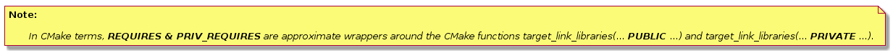

ESP-IDF Project and components
Concepts
- A “project” is a directory that contains all the files and configuration to build a single “app” (executable), as well as additional supporting elements such as a partition table, data/filesystem partitions, and a bootloader.
- “Project configuration” is held in a single file called sdkconfig in the root directory of the project. This configuration file is modified via idf.py menuconfig to customise the configuration of the project. A single project contains exactly one project configuration.
- An “app” is an executable which is built by ESP-IDF. A single project will usually build two apps - a “project app” (the main executable, ie your custom firmware) and a “bootloader app” (the initial bootloader program which launches the project app).
- “components” are modular pieces of standalone code which are compiled into static libraries (.a files) and linked into an app. Some are provided by ESP-IDF itself, others may be sourced from other places.
- “Target” is the hardware for which an application is built. At the moment, ESP-IDF supports only one target, esp32.
Some things are not part of the project:
- “ESP-IDF” is not part of the project. Instead it is standalone, and linked to the project via the IDF_PATH environment variable which holds the path of the esp-idf directory. This allows the IDF framework to be decoupled from your project.
- The toolchain for compilation is not part of the project. The toolchain should be installed in the system command line PATH.
Example Project
An example project directory tree might look like this:
1 - myProject/ 2 - CMakeLists.txt 3 - sdkconfig 4 - components/ - component1/ - CMakeLists.txt 5 - Kconfig 6 - src1.c 7 - component2/ - CMakeLists.txt 8 - Kconfig 9 - src1.c 10 - include/ - component2.h 11 - main/ - CMakeLists.txt 12 - src1.c 13 - src2.c 14 - build/
This example “myProject” contains the following elements:
- A top-level project CMakeLists.txt file. This is the primary file which CMake uses to learn how to build the project; and may set project-wide CMake variables. It includes the file /tools/cmake/project.cmake which implements the rest of the build system. Finally, it sets the project name and defines the project.
- “sdkconfig” project configuration file. This file is created/updated when idf.py menuconfig runs, and holds configuration for all of the components in the project (including ESP-IDF itself). The “sdkconfig” file may or may not be added to the source control system of the project.
- Optional “components” directory contains components that are part of the project. A project does not have to contain custom components of this kind, but it can be useful for structuring reusable code or including third party components that aren’t part of ESP-IDF. Alternatively, EXTRA_COMPONENT_DIRS can be set in the top-level CMakeLists.txt to look for components in other places. See the renaming mainsection for more info. If you have a lot of source files in the project, is recommended to group most into components instead of putting them all in “main”.
- “main” directory is a special component that contains source code for the project itself. “main” is a default name, the CMake variable COMPONENT_DIRS includes this component but you can modify this variable.
- “build” directory is where build output is created. This directory is created by idf.py if it doesn’t already exist. CMake configures the project and generates interim build files in this directory. Then, after the main build process is run, this directory will also contain interim object files and libraries as well as final binary output files. This directory is usually not added to source control or distributed with the project source code.
Component directories each contain a component CMakeLists.txt file. This file contains variable definitions to control the build process of the component, and its integration into the overall project. See Component CMakeLists Filesfor more details.
Each component may also include a Kconfig file defining the component configurationoptions that can be set via menuconfig. Some components may also include Kconfig.projbuild and project_include.cmake files, which are special files for overriding parts of the project.
Project CMakeLists File
Each project has a single top-level CMakeLists.txt file that contains build settings for the entire project. By default, the project CMakeLists can be quite minimal.
Minimal Example CMakeLists
Minimal project:
1 cmake_minimum_required(VERSION 3.5)
2 include($ENV{IDF_PATH}/tools/cmake/project.cmake)
3 project(myProject)
Mandatory Parts
The inclusion of these three lines, in the order shown above, is necessary for every project:
- cmake_minimum_required(VERSION 3.5) tells CMake the minimum version that is required to build the project. ESP-IDF is designed to work with CMake 3.5 or newer. This line must be the first line in the CMakeLists.txt file.
- include($ENV{IDF_PATH}/tools/cmake/project.cmake) pulls in the rest of the CMake functionality to configure the project, discover all the components, etc.
- project(myProject) creates the project itself, and specifies the project name. The project name is used for the final binary output files of the app - ie myProject.elf, myProject.bin. Only one project can be defined per CMakeLists file.
Optional Project Variables
These variables all have default values that can be overridden for custom behaviour. Look in /tools/cmake/project.cmake for all of the implementation details.
- COMPONENT_DIRS, COMPONENTS_DIRS: Directories to search for components. Defaults to IDF_PATH/components, PROJECT_DIR/components, and EXTRA_COMPONENT_DIRS. Override this variable if you don’t want to search for components in these places.
- EXTRA_COMPONENT_DIRS, EXTRA_COMPONENTS_DIRS: Optional list of additional directories to search for components. Paths can be relative to the project directory, or absolute.
- COMPONENTS: A list of component names to build into the project. Defaults to all components found in the COMPONENT_DIRS directories. Use this variable to “trim down” the project for faster build times. Note that any component which “requires” another component via the REQUIRES or PRIV_REQUIRES arguments on component registration will automatically have it added to this list, so the COMPONENTS list can be very short.
Any paths in these variables can be absolute paths, or set relative to the project directory.
To set these variables, use the cmake set command ie set(VARIABLE "VALUE"). The set() commands should be placed after the cmake_minimum(...) line but before the include(...) line.
Renaming main component
The build system provides special treatment to the main component. It is a component that gets automatically added to the build provided that it is in the expected location, PROJECT_DIR/main. All other components in the build are also added as its dependencies, saving the user from hunting down dependencies and providing a build that works right out of the box. Renaming the main component causes the loss of these behind-the-scences heavy lifting, requiring the user to specify the location of the newly renamed component and manually specifying its dependencies. Specifically, the steps to renaming main are as follows:
- Rename main directory.
- Set EXTRA_COMPONENT_DIRS in the project CMakeLists.txt to include the renamed main directory.
- Specify the dependencies in the renamed component’s CMakeLists.txt file via REQUIRES or PRIV_REQUIRES arguments on component registration.
Component CMakeLists Files
Each project contains one or more components. Components can be part of ESP-IDF, part of the project’s own components directory, or added from custom component directories (see above).
A component is any directory in the COMPONENT_DIRS list which contains a CMakeLists.txt file.
Searching for Components
The list of directories in COMPONENT_DIRS is searched for the project’s components. Directories in this list can either be components themselves (ie they contain a CMakeLists.txt file), or they can be top-level directories whose sub-directories are components.
When CMake runs to configure the project, it logs the components included in the build. This list can be useful for debugging the inclusion/exclusion of certain components.
Multiple components with the same name
When ESP-IDF is collecting all the components to compile, it will do this in the order specified by COMPONENT_DIRS; by default, this means ESP-IDF’s internal components first, then the project’s components, and finally any components set in EXTRA_COMPONENT_DIRS. If two or more of these directories contain component sub-directories with the same name, the component in the last place searched is used. This allows, for example, overriding ESP-IDF components with a modified version by copying that component from the ESP-IDF components directory to the project components directory and then modifying it there. If used in this way, the ESP-IDF directory itself can remain untouched.
Minimal Component CMakeLists
The minimal component CMakeLists.txt file simply registers the component to the build system using idf_component_register:
1 idf_component_register(SRCS "foo.c" "bar.c" 2 INCLUDE_DIRS "include" 3 REQUIRES mbedtls)
- SRCS is a list of source files (*.c, *.cpp, *.cc, *.S). These source files will be compiled into the component library.
- INCLUDE_DIRS is a list of directories to add to the global include search path for any component which requires this component, and also the main source files.
- REQUIRES is not actually required, but it is very often required to declare what other components this component will use. See Component Requirements.
A library with the name of the component will be built and linked into the final app. Directories are usually specified relative to the CMakeLists.txt file itself, although they can be absolute.
There are other arguments that can be passed to idf_component_register. These arguments are discussed here.
See example component requirementsand example component CMakeListsfor more complete component CMakeLists.txt examples.
Preset Component Variables
The following component-specific variables are available for use inside component CMakeLists, but should not be modified:
- COMPONENT_DIR: The component directory. Evaluates to the absolute path of the directory containing CMakeLists.txt. The component path cannot contain spaces. This is the same as the CMAKE_CURRENT_SOURCE_DIR variable.
- COMPONENT_NAME: Name of the component. Same as the name of the component directory.
- COMPONENT_ALIAS: Alias of the library created internally by the build system for the component.
- COMPONENT_LIB: Name of the library created internally by the build system for the component.
The following variables are set at the project level, but available for use in component CMakeLists:
- CONFIG_*: Each value in the project configuration has a corresponding variable available in cmake. All names begin with CONFIG_. More information here.
- ESP_PLATFORM: Set to 1 when the CMake file is processed within ESP-IDF build system.
Build/Project Variables
The following are some project/build variables that are available as build properties and whose values can be queried using idf_build_get_property from the component CMakeLists.txt:
- PROJECT_NAME: Name of the project, as set in project CMakeLists.txt file.
- PROJECT_DIR: Absolute path of the project directory containing the project CMakeLists. Same as the CMAKE_SOURCE_DIR variable.
- COMPONENTS: Names of all components that are included in this build, formatted as a semicolon-delimited CMake list.
- IDF_VER: Git version of ESP-IDF (produced by git describe)
- IDF_VERSION_MAJOR, IDF_VERSION_MINOR, IDF_VERSION_PATCH: Components of ESP-IDF version, to be used in conditional expressions. Note that this information is less precise than that provided by IDF_VER variable. v4.0-dev-*, v4.0-beta1, v4.0-rc1 and v4.0 will all have the same values of IDF_VERSION_* variables, but different IDF_VER values.
- IDF_TARGET: Name of the target for which the project is being built.
- PROJECT_VER: Project version.
- If PROJECT_VER variable is set in project CMakeLists.txt file, its value will be used.
- Else, if the PROJECT_DIR/version.txt exists, its contents will be used as PROJECT_VER.
- Else, if the project is located inside a Git repository, the output of git describe will be used.
- Otherwise, PROJECT_VER will be “1”.
Controlling Component Compilation
To pass compiler options when compiling source files belonging to a particular component, use the target_compile_options function:
1 target_compile_options(${COMPONENT_LIB} PRIVATE -Wno-unused-variable)
To apply the compilation flags to a single source file, use the CMake set_source_files_properties command:
1 set_source_files_properties(mysrc.c 2 PROPERTIES COMPILE_FLAGS 3 -Wno-unused-variable 4 )
This can be useful if there is upstream code that emits warnings.
When using these commands, place them after the call to idf_component_register in the component CMakeLists file.
Component Configuration
Each component can also have a Kconfig file, alongside CMakeLists.txt. This contains configuration settings to add to the configuration menu for this component.
These settings are found under the “Component Settings” menu when menuconfig is run.
To create a component Kconfig file, it is easiest to start with one of the Kconfig files distributed with ESP-IDF.
For an example, Adding conditional configuration:
The configuration system can be used to conditionally compile some files depending on the options selected in the project configuration.
Kconfig:
1 config FOO_ENABLE_BAR 2 bool "Enable the BAR feature." 3 help 4 This enables the BAR feature of the FOO component.
CMakeLists.txt:
1 set(srcs "foo.c" "more_foo.c")
2
3 if(CONFIG_FOO_ENABLE_BAR)
4 list(APPEND srcs "bar.c")
5 endif()
6
7 idf_component_register(SRCS "${srcs}" ...)
This example makes use of the CMake if function and list APPEND function.
This can also be used to select or stub out an implementation, as such:
Kconfig:
1 config ENABLE_LCD_OUTPUT 2 bool "Enable LCD output." 3 help 4 Select this if your board has a LCD. 5 6 config ENABLE_LCD_CONSOLE 7 bool "Output console text to LCD" 8 depends on ENABLE_LCD_OUTPUT 9 help 10 Select this to output debugging output to the lcd 11 12 config ENABLE_LCD_PLOT 13 bool "Output temperature plots to LCD" 14 depends on ENABLE_LCD_OUTPUT 15 help 16 Select this to output temperature plots
CMakeLists.txt:
1 if(CONFIG_ENABLE_LCD_OUTPUT)
2 set(srcs lcd-real.c lcd-spi.c)
3 else()
4 set(srcs lcd-dummy.c)
5 endif()
6
7 # We need font if either console or plot is enabled
8 if(CONFIG_ENABLE_LCD_CONSOLE OR CONFIG_ENABLE_LCD_PLOT)
9 list(APPEND srcs "font.c")
10 endif()
11
12 idf_component_register(SRCS "${srcs}" ...)
Preprocessor Definitions
The ESP-IDF build system adds the following C preprocessor definitions on the command line:
- ESP_PLATFORM : Can be used to detect that build happens within ESP-IDF.
- IDF_VER : Defined to a git version string. E.g. v2.0 for a tagged release or v1.0-275-g0efaa4f for an arbitrary commit.
Component Requirements
When compiling each component, the ESP-IDF build system recursively evaluates its dependencies. This means each component needs to declare the components that it depends on (“requires”).
When writing a component
1 idf_component_register(... 2 REQUIRES mbedtls 3 PRIV_REQUIRES console spiffs)
- REQUIRES should be set to all components whose header files are #included from the public header files of this component.
- PRIV_REQUIRES should be set to all components whose header files are #included from any source files in this component, unless already listed in REQUIRES. Also any component which is required to be linked in order for this component to function correctly.
- The values of REQUIRES and PRIV_REQUIRES should not depend on any configuration choices (CONFIG_xxx macros). This is because requirements are expanded before configuration is loaded. Other component variables (like include paths or source files) can depend on configuration choices.
- Not setting either or both REQUIRES variables is fine. If the component has no requirements except for the Common component requirementsneeded for RTOS, libc, etc.
If a components only supports some target chips (values of IDF_TARGET) then it can specify REQUIRED_IDF_TARGETS in the idf_component_register call to express these requirements. In this case the build system will generate an error if the component is included into the build, but does not support the selected target.

For more details check ESP-IDF Buidl System page